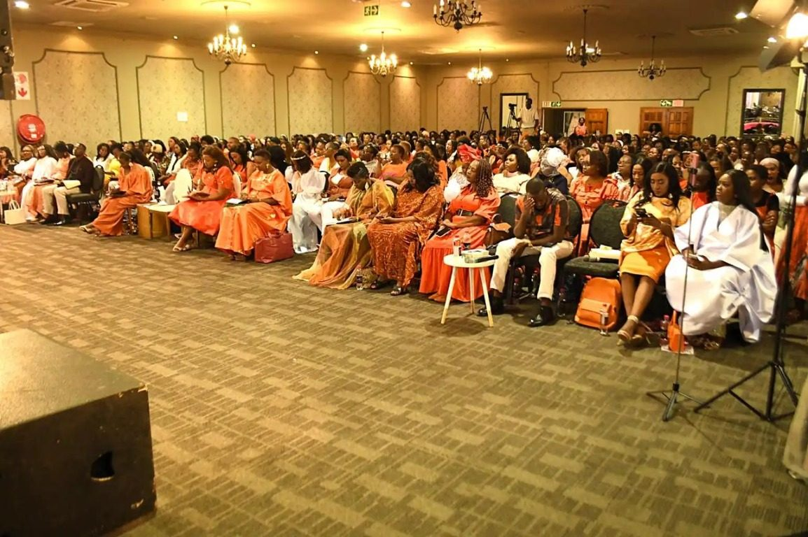
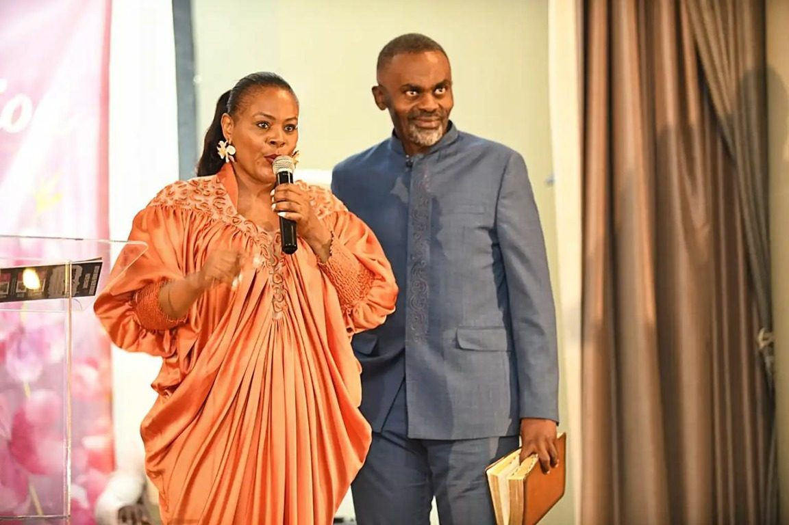
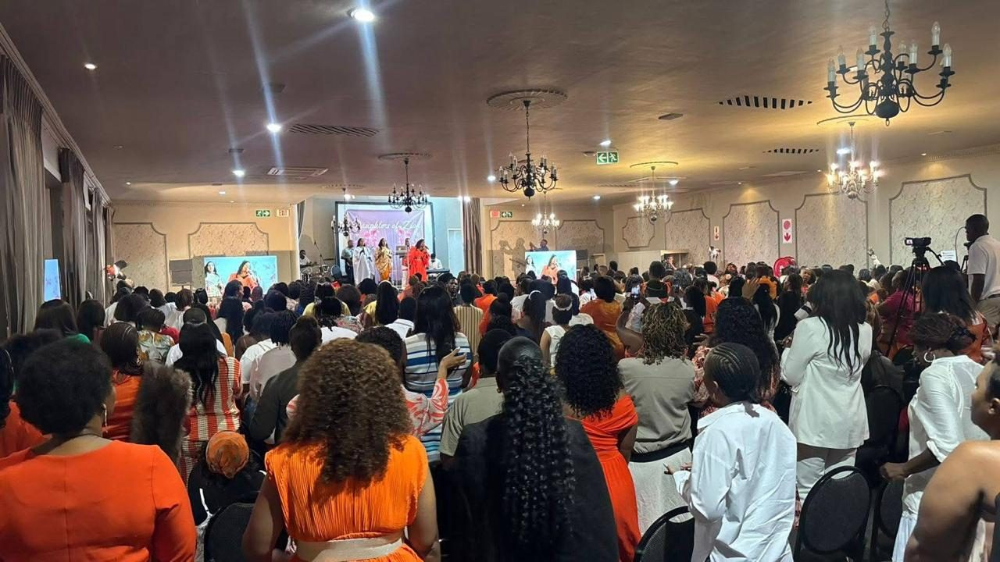
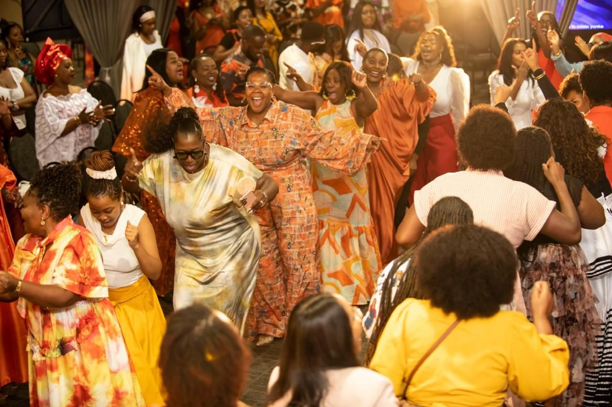

Daughters of Zion, the women’s ministry led by Pastor Judy Achero, brings women together across churches and communities for encouragement and faith-filled fellowship. This gallery captures highlights from the 2025 gathering, with room to share the 2026 and 2027 story as it unfolds.
A time to worship, learn and grow
Women filled the room, turning their attention to the stage as the programme unfolded. The gathering made room for teaching and reflection, as well as moments of prayer and praise. Together, attendees celebrated their faith and encouraged one another in their walk with God.
As the photographs show, the day held both attentive moments and joyful celebration. Women came from different walks of life to share in the experience, build connections and leave strengthened by the fellowship around them.
We give thanks for every woman who took part and for all who helped make the gathering possible. May the encouragement shared continue to bear fruit in homes, churches and communities.
Scenes from Daughters of Zion 2025




Coming next
Details for the next Daughters of Zion gathering will be shared here as plans are announced.
We are preparing the next season of worship, prayer and fellowship for women across South Africa.